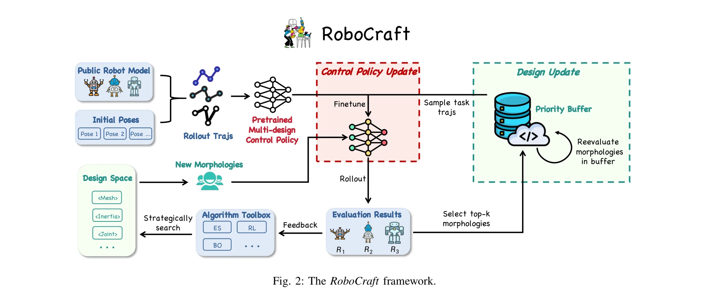
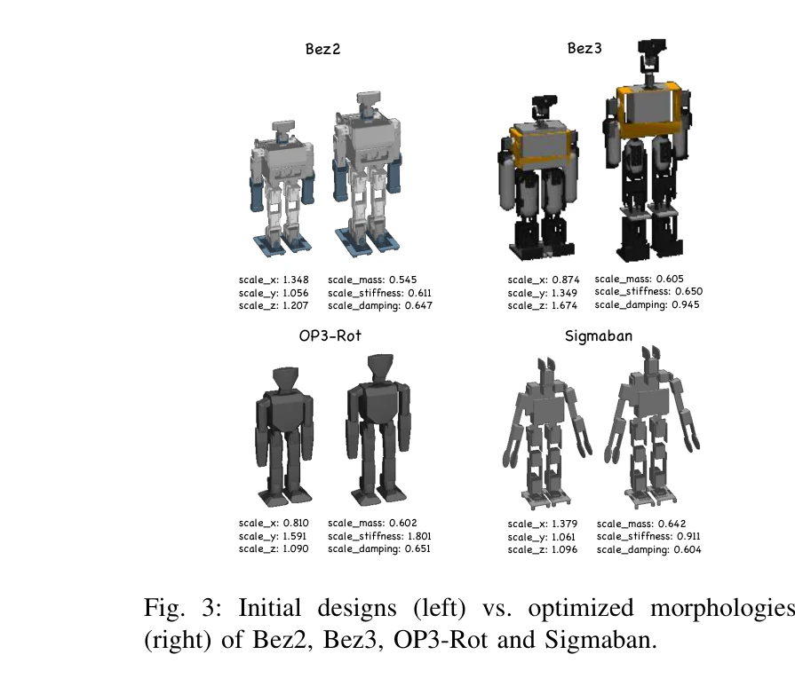

저자: Bo Yue, Sheng Xu, Kui Jia, Guiliang Liu | 날짜: 2025-10-25 | URL: https://arxiv.org/abs/2510.22336

Fig. 2: The RoboCraft framework.
본 논문은 humanoid 로봇의 fall recovery 능력을 향상시키기 위해 제어 정책과 신체 형태를 동시에 최적화하는 RoboCraft 프레임워크를 제안한다. 공유 제어 정책의 사전학습과 설계 공간 탐색을 결합하여 효율적인 co-design을 실현한다.

Fig. 3: Initial designs (left) vs. optimized morphologies
Fig. 2: The RoboCraft framework.
총평: 본 논문은 복잡한 humanoid 로봇에 대한 실질적이고 확장 가능한 co-design 프레임워크를 처음 제시하며, 다중 설계 사전학습 정책과 우선순위 버퍼를 통한 효율적 최적화로 형태 최적화의 중요성을 명확히 입증했다. 시뮬레이션 기반 한계에도 불구하고 embodied AI 분야의 중요한 진전을 나타낸다.